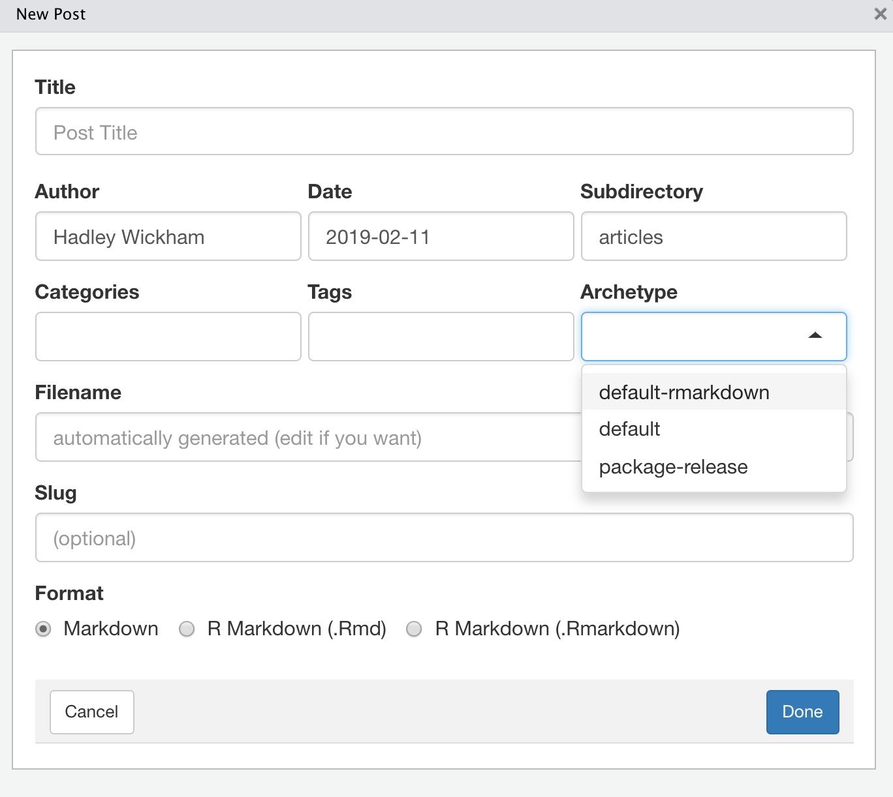

Hugo Archetypes
By Alison Hill in Theme Features R
February 19, 2019
“Just a spoonful of Hugo helps the blog go down.”
- me, only somewhat kidding
As a happy blogdown user, a common story I hear from other #rstats users is that you try to change one little thing in Hugo, and the whole site breaks. Here be dragons for folks who aren’t web developers.

I’m here to tell you that there are small spoonfuls of Hugo that can help you get your site UP (and even better- more efficient, more streamlined, more automated), even if you are not in the least bit interested in transitioning into a career in web development 😏.
My Project
The education team at RStudio needs a website and we have a short wishlist:
- We want something we can maintain ourselves,
- We want to look consistent with other RStudio sites on the outside, and
- We want to be consistent on the inside so that we can get help if/when we need it.
This led me to the current tidyverse.org blogdown site. I wanted to make a copy of the site then customize for the education team, but I noticed that the source code for the site didn’t make it easy for me to copy the structure of the site and edit only the content of the site. This is one of the real strengths of Hugo, so I embarked on a learning adventure.
As a result, I have been living and breathing Hugo lately. As in, my husband now recognizes Mike Dane’s voice. You may not have have met Mike yet, but he appears in all the video tutorials in the Hugo docs. His screencasts have been really helpful to me, like this one on templating. I’ve also spent a lot of time actually reading the docs (which are pretty good!), reading posts and answers on the Hugo discourse community site, and spelunking around inside the actual source code for two very well structured Hugo sites:
- The actual Hugo site: https://github.com/gohugoio/hugoDocs
- The rOpenSci site: https://github.com/ropensci/roweb2
I’ll be using this post and other later posts to share some of the things I’ve learned about Hugo along the way. Mainly breadcrumbs to myself, but I hope these help other people too.
For reference, I’m using Hugo via the blogdown R package, and within the RStudio IDE. These are my blogdown and Hugo versions:
packageVersion("blogdown")
## [1] '1.3.1'
blogdown::hugo_version()
## [1] '0.80.0'
tl;dr: A Teaspoon of Archetypes
-
Add custom archetypes as
.mdfiles to your project root directory (do not touch thearchetypesfolder in yourthemes/archetypesfolder).- If you don’t have that as an empty folder in your project root, make one, then add your archetype files to it.
- If you are making a new blogdown site, I recommend using these options to keep your empty directories^[These setup options are newish to the blogdown package: https://github.com/rstudio-education/arm-workshop-rsc2019/issues/8]:
library(blogdown) new_site(theme = "jpescador/hugo-future-imperfect", sample = TRUE, theme_example = TRUE, empty_dirs = TRUE, # this! to_yaml = TRUE)
(\#fig:proj-wizard)Using the RStudio Project Wizard
-
Use the “New Post” Addin in RStudio to create any and all new content for your site (not just posts!). Be sure to use the handy dropdown menu to select from all the possible archetypes. Also, careful about the subdirectory here- some themes use blog, others use news, articles, or posts.

-
Your archetypes, while only markdown files, can include R code. When you use the Addin, be sure to choose
R Markdown (.Rmd)as the format so that you can run the code.- Don’t miss this great blog post by my friend and the great educator Leo Collado-Torres on archetypes.
A Tablespoon of Archetypes
One of the easiest things you can do for yourself is customize your site’s archetypes. From the Hugo docs:
“Archetypes are templates used when creating new content.”
Right away when I cloned the tidyverse site, I noticed that there were instructions for how to contribute a new article (or blog post) in the
README.md and in a separate
CONTRIBUTING.md file. Then I noticed this
open GitHub issue from
Mara Averick (the tidyverse developer advocate) titled “Fix README/CONTRIBUTING so there’s one source of mechanical info?”.
I also noticed that there was no project root folder called archetypes, which is where you would store your custom site archetype files as .md files. In fact, there is no theme folder as you might expect either, which is where you could view the default theme archetypes. Let’s look at some from other Hugo themes:
-
The default Hugo theme for blogdown, Lithium, has just one archetype:
default.md--- title: '' date: '' --- -
In contrast, the Hugo Academic theme has A LOT: https://github.com/gcushen/hugo-academic/tree/master/archetypes; here is the content of the one for new posts:
+++ title = "{{ replace .Name "-" " " | title }}" subtitle = "" # Add a summary to display on homepage (optional). summary = "" date = {{ .Date }} draft = false # Authors. Comma separated list, e.g. `["Bob Smith", "David Jones"]`. authors = [] # Tags and categories # For example, use `tags = []` for no tags, or the form `tags = ["A Tag", "Another Tag"]` for one or more tags. tags = [] categories = [] # Projects (optional). # Associate this post with one or more of your projects. # Simply enter your project's folder or file name without extension. # E.g. `projects = ["deep-learning"]` references # `content/project/deep-learning/index.md`. # Otherwise, set `projects = []`. # projects = ["internal-project"] # Featured image # To use, add an image named `featured.jpg/png` to your page's folder. [image] # Caption (optional) caption = "" # Focal point (optional) # Options: Smart, Center, TopLeft, Top, TopRight, Left, Right, BottomLeft, Bottom, BottomRight focal_point = "" +++
A quick note: you may have noticed differences in both the content between these two files but also the structure. The first is a
YAML file, the second is a
TOML file. For blogdown users, you may want to use YAML. This is also why I recommend when you set up your site to use the to_yaml = TRUE option (in the Project Wizard from figure 1, check the “Convert all metadata to YAML” box; otherwise, the exampleSite will contain TOML instead of YAML)^[If you end up with TOML in your content files, run this R code: hugo_convert(to = "YAML", unsafe = TRUE)].
If you read the original tidyverse
CONTRIBUTING.md file, the instructions include a fair bit of R code that I would guess means a lot of copying and pasting into new posts. For example, the R Markdown setup chunk and the code for using usethis::use_tidy_thanks() for package releases. I studied the contributing guidelines, and parsed three different “kinds” of articles that are commonly contributed, each with a different archetype:
-
The
default.md- this is just for plain old markdown posts and basically sets up the YAML of the post to be the same as it is now (currently, there is no archetype dictating the content- it is pulling from a project-level .Rprofile). -
A
default-rmarkdown.mdwhich should only be used with an R Markdown post and provides only the setup chunk at the top. -
A
package-release.mdwhich also should only be used with an R Markdown post and adds theusethis::use_tidy_thanks()code chunk (this is pseudo-code so the default chunk option is set toeval = FALSE).
So I drafted a pull request that adds these three archetypes to the GitHub repository for the tidyverse.org. Here is the “after” Addin view:

Here’s hoping Hugo archetypes make some things about adding new content to your site easier. There is no Hugo involved, other than realizing that Hugo will look first in your themes/<THEME-NAME>/archetypes/ folder, then in your project root archetypes/ folder next.
DO
NOT
TOUCH any files in your themes/ directory.^[Trust me on this one- if you ever want to update your site this will make that process way harder.]
You may want to set up archetypes for your blogdown site if you have a “signature” R setup chunk that loads your preferred knitr chunk options, common libraries you always load at setup like tidyverse, ggplot2 themes you prefer (theme_minimal() FTW), etc. This may be especially helpful if you have multiple team members contributing to a single site and you want their posts to have a uniform setup. Then archetypes can be a real time- and sanity-saver. Get more ideas from Leo’s
blog post on archetypes. You can also make
directory based archetypes if you use Hugo page bundles, which is a topic of a future post.